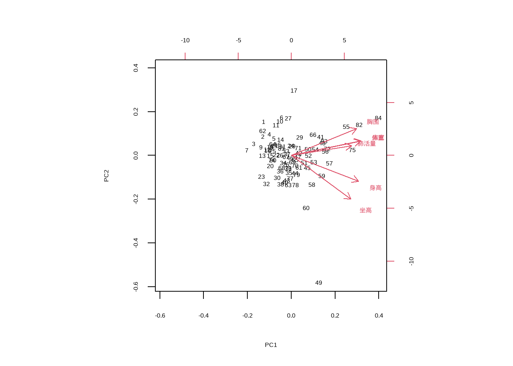
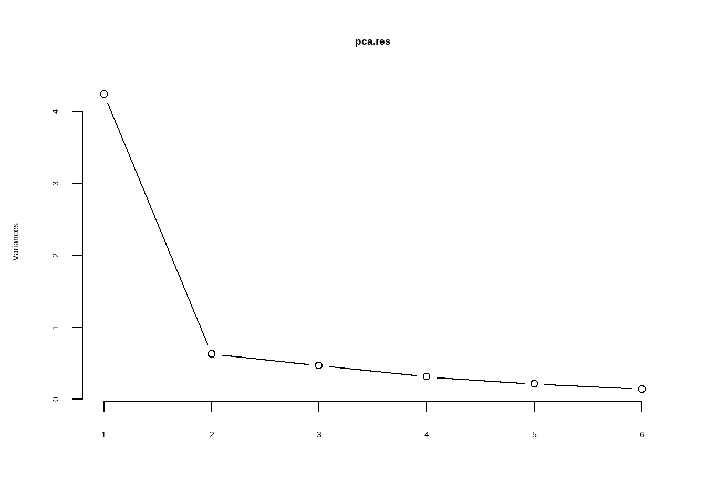
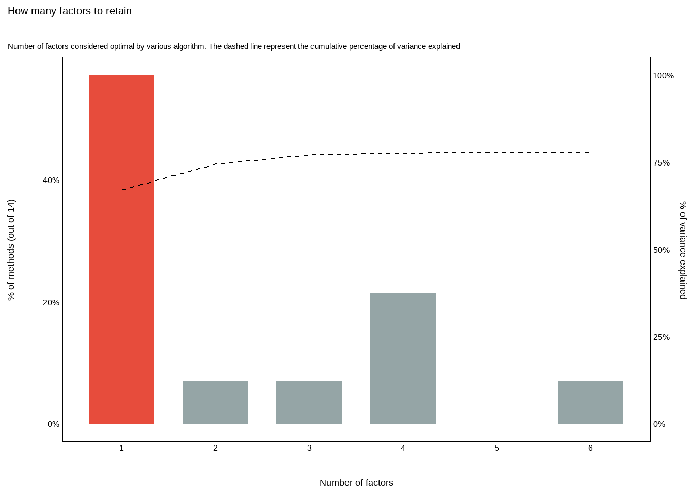

# 加载foreign包用于读取SPSS数据
# 如果没有安装，请先运行 install.packages("foreign")
# 读取数据
data22_1 <- foreign::read.spss("datasets/例22-01.sav",
to.data.frame = T,
reencode = "gbk") # 处理中文编码
# 查看数据结构和前几行
str(data22_1)
## 'data.frame': 84 obs. of 6 variables:
## $ 身高 : num 120 121 121 122 122 ...
## $ 坐高 : num 66.3 67.6 66.5 67.8 69.2 69.1 64.3 69 67.4 67.1 ...
## $ 体重 : num 23.8 23.4 22.9 24.6 24.4 27.2 20 24.9 21.8 23.5 ...
## $ 胸围 : num 61 59.8 59 59.5 60.7 64.5 56.1 58.4 59 60.2 ...
## $ 肩宽 : num 27.3 27.1 26 26.4 26.4 28.4 26.1 27.2 27.1 28.4 ...
## $ 肺活量: num 1210 1210 1040 1620 1690 1150 1150 1460 1190 1840 ...
## - attr(*, "variable.labels")= Named chr [1:6] "身高（cm）" "坐高（cm）" "体重（kg）" "胸围（cm）" ...
## ..- attr(*, "names")= chr [1:6] "身高" "坐高" "体重" "胸围" ...
head(data22_1)
## 身高 坐高 体重 胸围 肩宽 肺活量
## 1 120.1 66.3 23.8 61.0 27.3 1210
## 2 120.7 67.6 23.4 59.8 27.1 1210
## 3 121.2 66.5 22.9 59.0 26.0 1040
## 4 121.5 67.8 24.6 59.5 26.4 1620
## 5 122.5 69.2 24.4 60.7 26.4 1690
## 6 122.7 69.1 27.2 64.5 28.4 115028 主成分分析
主成分分析在医学统计领域是一种常见的多元统计方法，在机器学习领域是一种常见的数据降维方法，但是在机器学习中它更多的是作为一种预处理步骤。
在医学研究中，为了客观、全面地评估某种疾病或健康状况，我们往往需要收集大量的指标。比如：评价儿童的生长发育，我们不能只看身高，还要看体重、胸围、头围、坐高、肺活量等十多个指标。
- 如果只用其中一个指标（如身高）来评价，结论显然是片面的。
- 如果分别对每个指标进行评价，可能会出现“身高排名靠前，但体重排名靠后”的矛盾，难以综合打分。
- 指标太多，不仅工作量大，而且指标之间往往存在相关性（例如身高高的人，通常体重也重），直接分析会导致信息冗余。
主成分分析的核心思想是“降维”和“综合”。它通过数学变换，将原来众多具有一定相关性的指标（比如6个），重新组合成一组新的、互不相关的综合指标（主成分）。
- 保留信息：这几个新指标能保留原始数据的大部分信息。
- 简化分析：用少数几个主成分代替原始变量，使问题简化，同时避免多重共线性问题。
简单来说，PCA就是把“一堆相关的复杂指标”，浓缩成“几个独立的综合得分”，方便我们进行综合评价或后续建模。
28.1 数据探索
孙振球《医学统计学》第4版例22-1。
某研究者测得84名10岁男孩的身高（cm）、坐高（cm）、体重（kg）、胸围（cm）、肩宽（cm）、肺活量（l）等6项生长发育指标，试利用主成分分析找出少数几个相互独立的主成分，以便进一步对这批儿童的生长发育情况进行综合评价。
28.1.1 相关性检验
在进行PCA之前可以先进行相关性分析，看看相关系数，这样有助于我们查看各个变量之间的相关性，如果各个变量之间的相关性很小，那么这个数据可能不适合做PCA。
cor(data22_1)
## 身高 坐高 体重 胸围 肩宽 肺活量
## 身高 1.0000000 0.7412802 0.6863188 0.5728956 0.7500264 0.6064633
## 坐高 0.7412802 1.0000000 0.5922483 0.5242007 0.5462781 0.4960257
## 体重 0.6863188 0.5922483 1.0000000 0.7778753 0.7791687 0.6189918
## 胸围 0.5728956 0.5242007 0.7778753 1.0000000 0.7611944 0.5760242
## 肩宽 0.7500264 0.5462781 0.7791687 0.7611944 1.0000000 0.6453090
## 肺活量 0.6064633 0.4960257 0.6189918 0.5760242 0.6453090 1.000000028.1.2 KMO和Bartlett球形检验
KMO（Kaiser-Meyer-Olkin）检验用于衡量变量之间的偏相关性。其取值范围在0到1之间.
- 若KMO值越接近1，表明变量间的偏相关性越强，意味着原始变量之间存在较多的共同信息，适合进行主成分分析等降维操作； -若KMO值接近0，则说明变量间的偏相关性较弱，各变量可能相对独立，不太适合做主成分分析。
- 一般来说，KMO值大于0.6时，进行主成分分析的效果较为理想。
KMO检验可以使用psych实现：
psych::KMO(data22_1)
## Kaiser-Meyer-Olkin factor adequacy
## Call: psych::KMO(r = data22_1)
## Overall MSA = 0.85
## MSA for each item =
## 身高 坐高 体重 胸围 肩宽 肺活量
## 0.79 0.81 0.89 0.84 0.83 0.96Overall MSA（Measures of Sampling Adequacy）是总体的检验统计量，然后是每个变量的检验统计量。MSA取值范围在0到1之间，越接近1越好。
Bartlett球形检验与KMO检验类似，也是帮助我们确定变量之间是否具有足够的相关性。Bartlett球形检验也可以使用psych实现：
psych::cortest.bartlett(data22_1)
## $chisq
## [1] 357.6096
##
## $p.value
## [1] 5.375052e-67
##
## $df
## [1] 15chisq：卡方统计量，其值越大，表明变量间的相关性越强。p.value：p值，若p值小于设定的显著性水平（通常为0.05），则拒绝原假设，认为变量之间存在显著的相关性，适合进行主成分分析或因子分析等依赖变量相关性的分析方法。
以上两个检验也可以直接用performance包实现：
performance::check_factorstructure(data22_1)
## # Is the data suitable for Factor Analysis?
##
##
## - Sphericity: Bartlett's test of sphericity suggests that there is sufficient significant correlation in the data for factor analysis (Chisq(15) = 357.61, p < .001).
## - KMO: The Kaiser, Meyer, Olkin (KMO) overall measure of sampling adequacy suggests that data seems appropriate for factor analysis (KMO = 0.85). The individual KMO scores are: 身高 (0.79), 坐高 (0.81), 体重 (0.89), 胸围 (0.84), 肩宽 (0.83), 肺活量 (0.96).28.2 PCA和结果解读
主成分分析可以通过分步计算，主要就是标准化-求相关矩阵-计算特征值和特征向量。R中自带了prcomp()进行主成分分析，只需1行代码即可，这就是工具的魅力，一次完成多步需求。
使用prcomp()进行主成分分析：
# 执行PCA
# scale. = TRUE: 非常重要！因为不同指标单位不同（cm, kg, L），必须标准化
# center = TRUE: 中心化（默认开启），建议显式写出
pca.res <- prcomp(data22_1, scale. = T, # 标准化
center = T # 中心化
)28.2.1 特征值和特征向量
查看标准差及特征值，特征值（Eigenvalue）反映了每个主成分包含的信息量。特征值越大，说明对应的主成分能解释原始数据的方差越多，也就说明该主成分越重要。
# 查看标准差
pca.res$sdev
## [1] 2.0588304 0.7933715 0.6835077 0.5598405 0.4594263 0.3743029
# 特征值等于标准差的平方
eigenvalues <- pca.res$sdev^2
eigenvalues
## [1] 4.2387825 0.6294383 0.4671827 0.3134213 0.2110725 0.1401026特征向量描述了原始变量如何线性组合成主成分，特征向量的每一列对应一个主成分，每一行对应一个原始变量。
# 查看特征向量
pca.res$rotation
## PC1 PC2 PC3 PC4 PC5 PC6
## 身高 0.4203321 -0.4167129 -0.03406284 -0.53910264 0.017562308 -0.597972316
## 坐高 0.3723858 -0.7087290 0.15671634 0.46198381 0.100199903 0.333171061
## 体重 0.4319228 0.2296576 0.24150531 0.07749559 -0.833734001 0.035458189
## 胸围 0.4077593 0.4372735 0.36215616 0.39560879 0.457124857 -0.381965511
## 肩宽 0.4351067 0.2365763 0.08472653 -0.52700801 0.292497096 0.619873551
## 肺活量 0.3775008 0.1553526 -0.88182721 0.23598725 0.004634012 -0.005291403通过特征向量可知，对于我们的PC1，它的计算公式如下：
\[ PC1=0.42*身高+0.37*坐高+0.43*体重+0.41*胸围+0.44*肩宽+0.38*肺活量 \]
28.2.2 载荷矩阵
载荷矩阵(Loadings)更直观地反映原始变量与主成分的相关性。绝对值越大，贡献越大。
# 计算载荷矩阵
# 方法：将每个特征向量列乘以对应的标准差
loadings <- sweep(pca.res$rotation, 2, pca.res$sdev, FUN = "*")
loadings
## PC1 PC2 PC3 PC4 PC5 PC6
## 身高 0.8653926 -0.3306081 -0.02328221 -0.30181147 0.008068586 -0.223822759
## 坐高 0.7666792 -0.5622854 0.10711682 0.25863723 0.046034468 0.124706887
## 体重 0.8892558 0.1822038 0.16507073 0.04338517 -0.383039307 0.013272102
## 胸围 0.8395073 0.3469204 0.24753651 0.22147781 0.210015170 -0.142970790
## 肩宽 0.8958109 0.1876929 0.05791123 -0.29504041 0.134380851 0.232020454
## 肺活量 0.7772102 0.1232523 -0.60273566 0.13211521 0.002128987 -0.001980587由载荷矩阵可知：
- 第一主成分PC1在各原始指标上的因子载荷较为均匀，故可认为该主成分反映的是各原始指标的综合信息；
- 第二主成分PC2在身高、坐高、胸围上的因子载荷较大，故可认为该主成分反映的是体形方面的信息；
- 而第三主成分PC3则主要反映了肺活量的信息。
28.2.3 方差贡献率
查看主成分的标准差、方差贡献率、累积方差贡献率：
# 查看标准差、方差贡献率、累积方差贡献率
summary(pca.res)
## Importance of components:
## PC1 PC2 PC3 PC4 PC5 PC6
## Standard deviation 2.0588 0.7934 0.68351 0.55984 0.45943 0.37430
## Proportion of Variance 0.7065 0.1049 0.07786 0.05224 0.03518 0.02335
## Cumulative Proportion 0.7065 0.8114 0.88923 0.94147 0.97665 1.00000Standard deviation:标准差Proportion of Variance:方差贡献率Cumulative Proportion:累积方差贡献率
方差贡献率反映了主成分到底保留了原始数据的多少信息。
通常我们会选择方差贡献率较大的前几个主成分，这些主成分能够保留原始数据的大部分信息。通过累积方差贡献率，可以确定需要保留的主成分个数。例如，如果前3个主成分的累积方差贡献率达到了85%（该例中前3个主成分的累积方差贡献率为88.92%），那么可以选择保留这两个主成分，将6维数据降维到3维数据进行分析。
以上信息可以整理成一个表格方便查看：
# 创建一个汇总数据框
pca_summary <- data.frame(
PC = paste0("PC", 1:length(eigenvalues)),
标准差 = pca.res$sdev,
特征值 = eigenvalues,
贡献率 = summary(pca.res)$importance[2,],
累计贡献率 = summary(pca.res)$importance[3,]
)
pca_summary
## PC 标准差 特征值 贡献率 累计贡献率
## PC1 PC1 2.0588304 4.2387825 0.70646 0.70646
## PC2 PC2 0.7933715 0.6294383 0.10491 0.81137
## PC3 PC3 0.6835077 0.4671827 0.07786 0.88923
## PC4 PC4 0.5598405 0.3134213 0.05224 0.94147
## PC5 PC5 0.4594263 0.2110725 0.03518 0.97665
## PC6 PC6 0.3743029 0.1401026 0.02335 1.0000028.2.4 主成分得分
主成分的得分是将原始数据投影到主成分轴上的坐标值。
# 样本得分score
head(pca.res$x)
## PC1 PC2 PC3 PC4 PC5 PC6
## [1,] -2.3681651 1.1230466 0.4541490 0.4315565 0.17386120 0.23771529
## [2,] -2.4555295 0.6321972 0.3361207 0.4570180 0.10341842 0.33746844
## [3,] -3.2442291 0.3900013 0.6499530 0.4276379 -0.13379948 -0.18200474
## [4,] -1.9147157 0.7005403 -0.9625510 1.0055011 -0.34912505 0.01940031
## [5,] -1.4971151 0.5582668 -1.0216732 1.2799949 -0.09967732 -0.09568013
## [6,] -0.8372717 1.2544166 1.4171077 0.5741369 0.12974326 0.33299627主成分得分可以用于样本的排序和聚类分析。将样本的主成分得分绘制在二维或三维空间中，可以直观地观察样本之间的关系。例如，在主成分得分图中，距离较近的样本可能具有相似的特征。
28.3 结果可视化
这里展示的是默认的结果可视化，这个默认的图很丑，不建议大家用，更加美观的可视化请参考：PCA可视化
28.3.1 双标图
# 双标图
biplot(pca.res)
双标图通常展示前两个主成分（第一主成分和第二主成分），横轴一般是第一主成分，纵轴是第二主成分。主成分是原始变量的线性组合，第一主成分通常解释了数据中最大的方差，第二主成分解释了剩余方差中的最大值，且与第一主成分正交（不相关）。
图中的点代表样本。点在图中的位置反映了样本在主成分空间中的得分。距离较近的点表示这些样本在主成分所代表的特征上具有相似性。
样本点在坐标轴上的投影可以近似看作该样本在相应主成分上的得分。沿着第一主成分轴（通常是横轴）方向的位置变化反映了样本在第一主成分上得分的高低，同理，沿着第二主成分轴（通常是纵轴）方向的位置变化反映了样本在第二主成分上得分的高低。
图中的箭头代表原始变量。箭头的方向表示该变量与主成分之间的相关性方向。如果箭头与某个主成分轴的夹角较小，说明该变量与这个主成分的相关性较强。例如，若一个变量的箭头几乎与第一主成分轴平行，那么这个变量在第一主成分上的载荷较大，对第一主成分的贡献也较大。
箭头的长度表示该变量对主成分的重要性。箭头越长，说明该变量对主成分的影响越大。
通过箭头之间的夹角可以判断变量之间的相关性。夹角较小的箭头表示对应的变量之间正相关；夹角接近180度的箭头表示对应的变量之间负相关；夹角接近90度的箭头表示对应的变量之间相关性较弱。
28.3.2 碎石图
碎石图可以帮助确认最佳的主成分个数，可以使用默认的screeplot()实现：
# 默认是条形图，我们改为折线图，其实就是方差贡献度的可视化
screeplot(pca.res, type = "lines")
一般来说，主成分的保留个数可以按照以下原则确定：
- 以累积贡献率确定，当前K个主成分的累积贡献率达到某一特定值（一般选70%或者80%、90%都行）时，则保留前K个主成分；
- 以特征值大小来确定：如果主成分的特征值大于1，就保留这个主成分。
从上图可以看到用1-3个主成分就挺好了。但是保留几个主成分并没有绝对的标准，大家根据自己的实际情况来！
28.4 确定PC数量
这里再给大家介绍一个非常实用的函数，使用parameters包实现，可以给出好多种方法的选择，如Kaiser准则、平行分析、最优坐标法等。
n <- parameters::n_components(data22_1)
n
## # Method Agreement Procedure:
##
## The choice of 1 dimensions is supported by 8 (57.14%) methods out of 14 (Optimal coordinates, Acceleration factor, Parallel analysis, Kaiser criterion, Scree (SE), Scree (R2), VSS complexity 1, Velicer's MAP).8个方法都支持选择1个主成分，如果要想查看所有的方法及每个方法选择的主成分个数,可以直接变为数据框查看:
as.data.frame(n) # 一共有14个方法!
## n_Factors Method Family
## 1 1 Optimal coordinates Scree
## 2 1 Acceleration factor Scree
## 3 1 Parallel analysis Scree
## 4 1 Kaiser criterion Scree
## 5 1 Scree (SE) Scree_SE
## 6 1 Scree (R2) Scree_SE
## 7 1 VSS complexity 1 VSS
## 8 1 Velicer's MAP Velicers_MAP
## 9 2 VSS complexity 2 VSS
## 10 3 CNG CNG
## 11 4 Bartlett Barlett
## 12 4 Anderson Barlett
## 13 4 Lawley Barlett
## 14 6 Bentler Bentler或者也可以查看这十几种结果的汇总表:
summary(n)
## n_Factors n_Methods Variance_Cumulative
## 1 1 8 0.6725375
## 2 2 1 0.7450992
## 3 3 1 0.7723271
## 4 4 3 0.7773793
## 5 6 1 0.7791312当然也可以把结果画出来的,借助see这个包即可:
library(see)
plot(n)+theme_modern()
横坐标是选择的主成分数量,左侧纵坐标是方法的数量（百分比）,右侧纵坐标是解释的方差百分比。先看条形图，选择1个主成分的方法最多，占了14个方法的约50%以上；再看折线图，选择主成分越多，解释的方差百分比越多，不过超过2之后就变化不大了。
28.5 详细结果
R语言默认的prcomp()已经很好用了，但是我还是更推荐factoMineR中的PCA()函数，更加强大，1行代码即可给出15种结果。
library(FactoMineR)
# 1行代码即可
pca.res <- PCA(data22_1, graph = F, scale.unit = T)
pca.res
## **Results for the Principal Component Analysis (PCA)**
## The analysis was performed on 84 individuals, described by 6 variables
## *The results are available in the following objects:
##
## name description
## 1 "$eig" "eigenvalues"
## 2 "$var" "results for the variables"
## 3 "$var$coord" "coord. for the variables"
## 4 "$var$cor" "correlations variables - dimensions"
## 5 "$var$cos2" "cos2 for the variables"
## 6 "$var$contrib" "contributions of the variables"
## 7 "$ind" "results for the individuals"
## 8 "$ind$coord" "coord. for the individuals"
## 9 "$ind$cos2" "cos2 for the individuals"
## 10 "$ind$contrib" "contributions of the individuals"
## 11 "$call" "summary statistics"
## 12 "$call$centre" "mean of the variables"
## 13 "$call$ecart.type" "standard error of the variables"
## 14 "$call$row.w" "weights for the individuals"
## 15 "$call$col.w" "weights for the variables"而且配合factoextra，可以进行发表级的可视化，可视化下次介绍，下面给大家简单介绍下结果：
| 编号 | R 对象路径 (Path) | 中文含义说明 |
|---|---|---|
| 1 | $eig |
特征值 (Eigenvalues)：包含每个主成分的特征值、方差贡献率及累积方差贡献率。 |
| 2 | $var |
变量结果 (Results for the variables)：包含所有与变量相关的分析结果。 |
| 3 | $var$coord |
变量坐标 (Coordinates for the variables)：变量在主成分空间中的坐标（即载荷Loadings）。 |
| 4 | $var$cor |
变量 - 维度相关性 (Correlations between variables and dimensions)：变量与各主成分之间的相关系数。 |
| 5 | $var$cos2 |
变量余弦平方 (Cos2 for the variables)：变量在主成分上的投影质量（拟合优度），取值范围 0-1。 |
| 6 | $var$contrib |
变量贡献度 (Contributions of the variables)：各变量对主成分形成的贡献百分比。 |
| 7 | $ind |
个体结果 (Results for the individuals)：包含所有与样本点相关的分析结果。 |
| 8 | $ind$coord |
个体坐标 (Coordinates for the individuals)：样本点在主成分空间中的坐标（即主成分得分 Scores）。 |
| 9 | $ind$cos2 |
个体余弦平方 (Cos2 for the individuals)：样本点在主成分上的投影质量。 |
| 10 | $ind$contrib |
个体贡献度 (Contributions of the individuals)：各样本点对主成分形成的贡献百分比。 |
| 11 | $call |
调用统计摘要 (Summary statistics / Call parameters)：包含 PCA 函数调用时的参数设置和基础统计量。 |
| 12 | $call$centre |
变量均值 (Mean of the variables)：用于中心化的各变量均值（若进行了中心化）。 |
| 13 | $call$ecart.type |
变量标准差 (Standard deviation of the variables)：用于标准化的各变量标准差（若进行了标准化）。(注：原文 “standard error” 在此语境下通常指代用于缩放的 Standard Deviation) |
| 14 | $call$row.w |
个体权重 (Weights for the individuals)：分析中使用的样本行权重。 |
| 15 | $call$col.w |
变量权重 (Weights for the variables)：分析中使用的变量列权重。 |